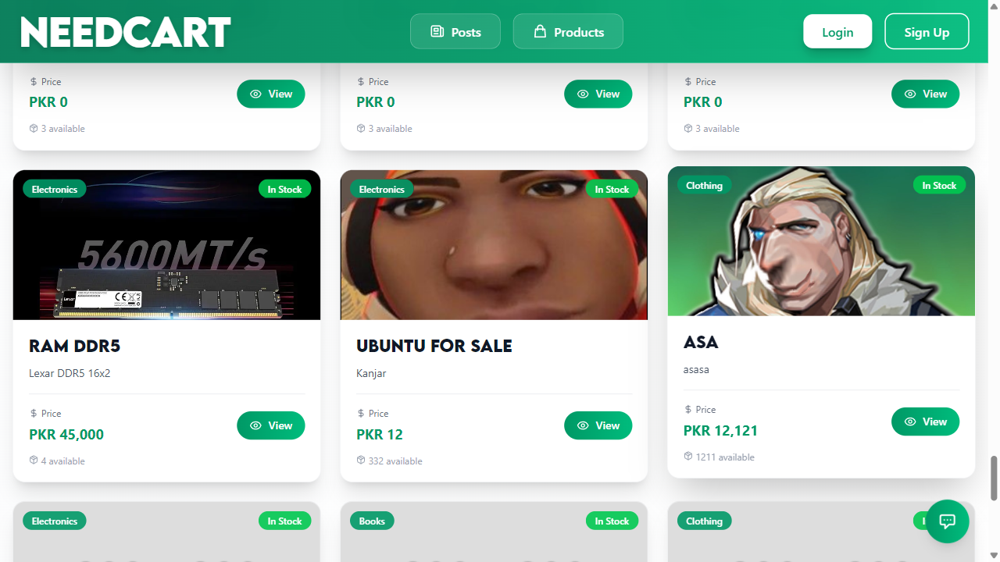
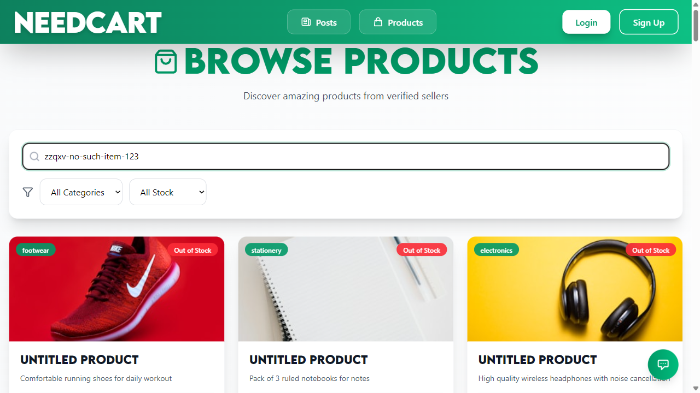
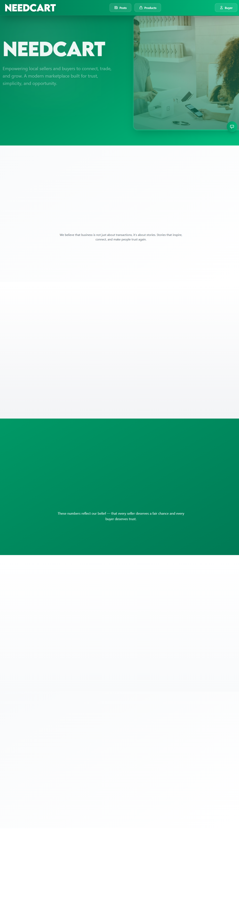
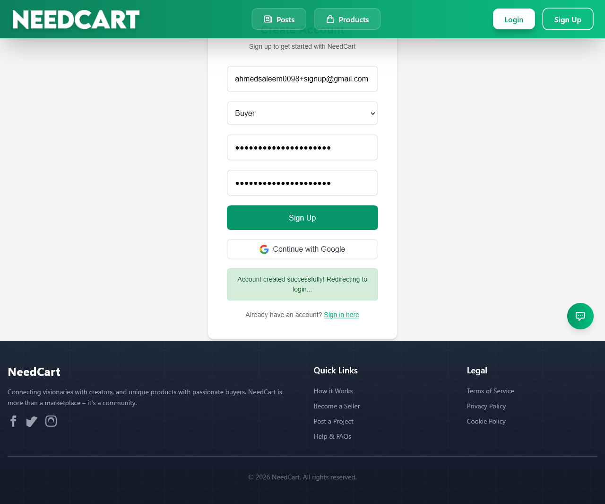
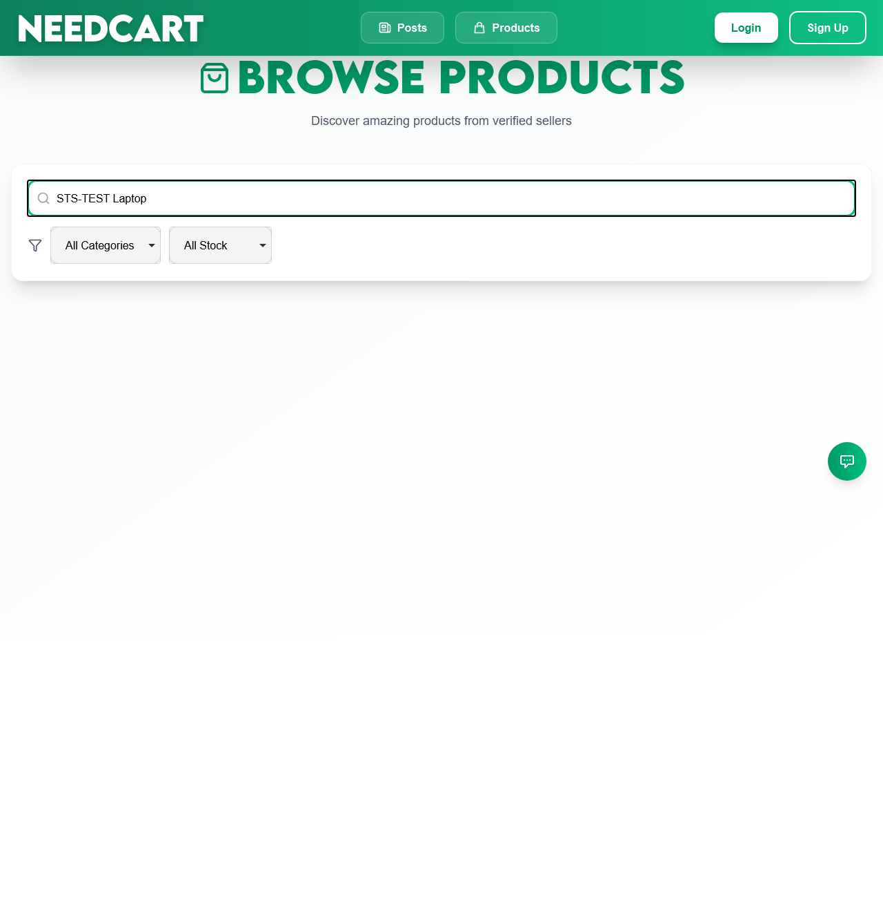
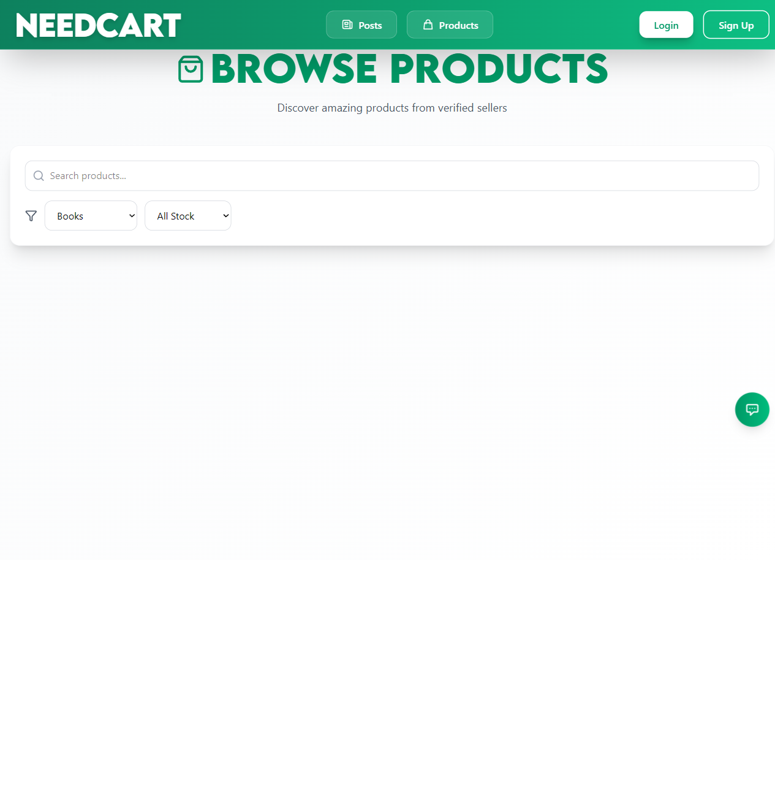
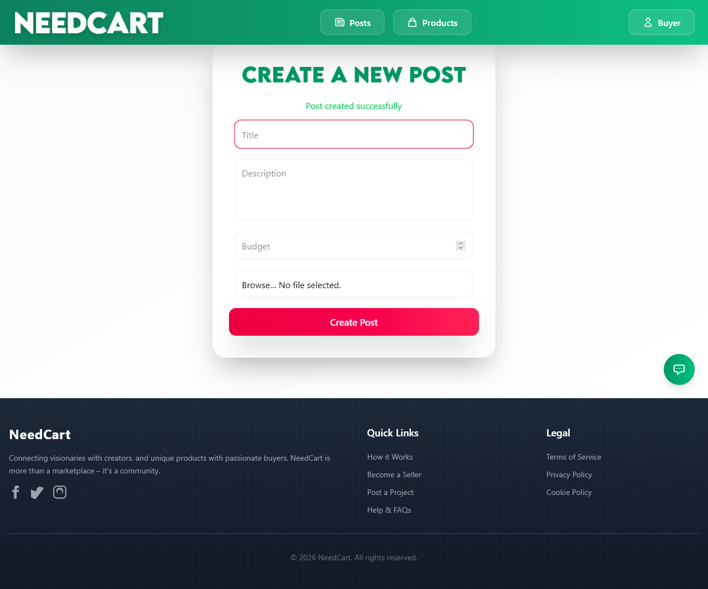
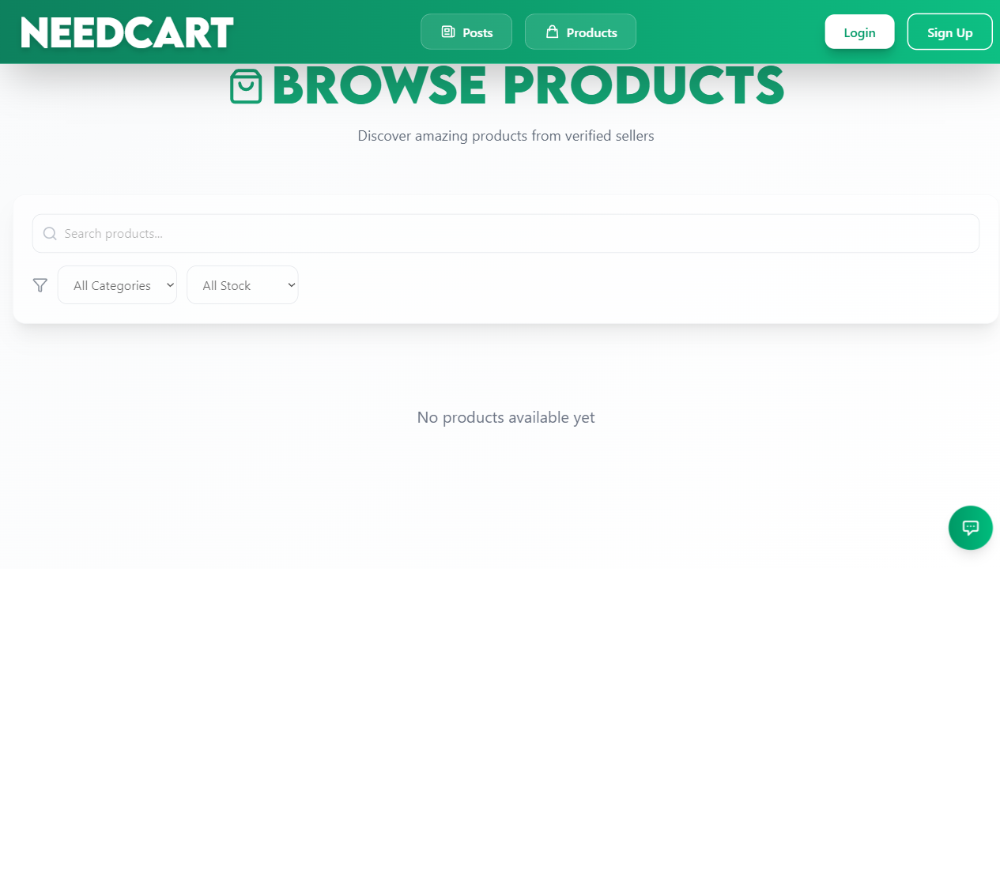
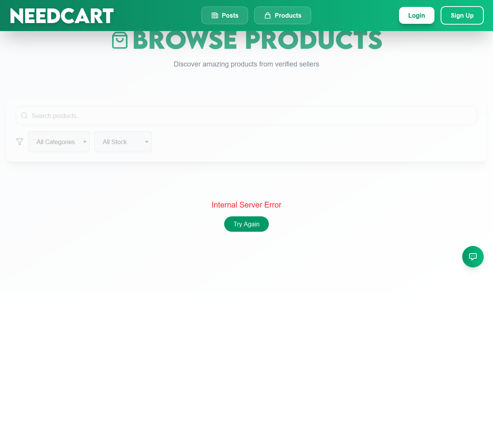

Team: Shaheer, Ahmed Course: ________ Instructor: ________ Date: 30 October 2026
This is the single report for the whole assignment. The only generated HTML file is the raw pytest-html evidence of the final run: reports/report.html.
NeedCart is a marketplace where buyers post requirements and sellers list products (React + Vite frontend, Express + MongoDB backend, Firebase authentication). The goal of this work was to build an automated Playwright (Python, pytest) suite that checks four user-facing features end to end, the products API, and how the page behaves when the network misbehaves, and to prove the suite catches a deliberately introduced bug.
| Item | Value |
|---|---|
| OS | Windows 11 Pro Education 10.0.26200 |
| Python | 3.12.10 |
| Playwright (Python) | 1.64.1 |
| pytest / pytest-playwright / pytest-html / pytest-rerunfailures | 9.2.0 / 0.10.0 / 4.2.0 / 16.7 |
| Other libraries | pymongo 4.19.0, requests 2.34.2, python-dotenv 1.2.4 |
| Browsers | Chromium 156.0.8078.4, Firefox 157.0, WebKit 27.2 |
| App under test | Frontend http://localhost:5173, backend http://localhost:8000, MongoDB Atlas db NeedKart, Firebase Auth |
| Run mode | Headed (real browser windows, --headed --slowmo 150), so every action can be watched live |
pages/.APIRequestContext with a Firebase ID token (Authorization: Bearer), asserting status code and body. No browser, so they run once.page.route() on **/product/all fakes an empty list and a 500 error; both also fail on any uncaught JavaScript error.STS-TEST…, removed after every test and at session start/end. The database has 0 leftover STS-TEST records after the final runs. No time.sleep in any test; waiting is done with Playwright auto-waiting expect().Tested: Login, Signup + OTP, Product browse/search/filter, Buyer create post, Products API CRUD, Network failure handling.
Left out, with reasons
| Feature | Reason |
|---|---|
| Stripe payments | Third-party iframe, test-card flows, risky to automate |
| Google OAuth login | Third-party popup; Google blocks automated sign-in |
| Gemini AI chatbot | Answers change every time, nothing stable to assert |
| Cloudinary image quality | External service, slow, uses quota (it is only exercised because creation requires an image) |
| Admin dashboard | Needs an admin account; lower user-facing priority |
| Real email delivery | External SMTP (and it is broken here, see 9.2); OTP is read from MongoDB |
| Offers, orders, escrow, reviews | Multi-user, multi-step flows that depend on payments |
| Plan | Reality in the code | What we did |
|---|---|---|
/api/... routes, PUT/DELETE |
Routes have no /api or version prefix; delete is POST /product/remove/:id |
Used the real routes |
| Product update (PUT) | No product update endpoint exists | TC-15 uses the only real update: PATCH /buyer-dashboard/posts/:id/status |
| Login redirects to buyer dashboard | Redirects to / |
Asserted / plus the "Buyer" menu |
| Signup logs the user in | After the OTP the app shows a message and goes to /login |
Asserted message + URL + buyer record in MongoDB |
| Login error shown on page | Shown in a browser alert() |
Test captures the dialog |
| Image optional? | Mandatory (Multer → Cloudinary) | Tiny fixtures/test-image.png (74 bytes) |
| Seed products via the API | Would need 3 Cloudinary uploads per run | Seeded straight into MongoDB; API create is covered by TC-13 |
| Seller can add products | Sellers must be approved by an admin | Setup script sets is_verified in MongoDB |
| Signup email works | Gmail rejects the backend's app password (signup returns 500 after saving the OTP) | The signup page object and setup script treat exactly that "Failed to send OTP email" answer as success; any other error is passed through unchanged |
| Delete test Firebase user via REST | Needs the user's token and Firebase rate-limits sign-ins | scripts/delete_firebase_user.mjs uses the backend's own Admin SDK setup |
| Separate HTML report per browser | Requested change: one report | One reports/report.html + this file |
data-testid attributes added to the app (only 2): product-card (Frontend/src/components/Product/ProductCard.jsx) and category-filter (Frontend/src/pages/Products.jsx).
Result = final headed run on Chromium, Firefox and WebKit (all three agree).
| ID | Feature | Type | Description | Expected result | Actual result | Status | Owner |
|---|---|---|---|---|---|---|---|
| TC-01 | Login | Positive | Valid buyer email + password | Lands on /, "Buyer" menu visible, Login link gone |
As expected | Pass | Shaheer |
| TC-02 | Login | Negative | Valid email, wrong password | Error alert (auth/invalid-credential), stays on /login |
As expected | Pass | Shaheer |
| TC-03 | Login | Negative | Empty email and password | Submit blocked by required, no navigation, no alert |
As expected | Pass | Shaheer |
| TC-04 | Signup | Positive | Sign up as buyer, OTP read from MongoDB | OTP modal, then "Account created successfully!", /login, buyer record exists; account cleaned up |
As expected | Pass | Shaheer |
| TC-05 | Signup | Negative | Email notanemail |
Browser validation error, no OTP modal, no OTP stored | As expected | Pass | Shaheer |
| TC-06 | Signup | Negative | Wrong OTP 000000 |
"Invalid or expired OTP", modal stays, no account | As expected | Pass | Shaheer |
| TC-07 | Product search | Positive | Search STS-TEST Laptop |
Laptop card visible; Novel and Tshirt absent | As expected | Pass | Ahmed |
| TC-08 | Product filter | Positive | Category = Books | Novel visible, laptop absent, every card shows "Books" | As expected | Pass | Ahmed |
| TC-09 | Product search | Negative | Search zzqxv-no-such-item-123 |
"No products found matching your criteria", 0 cards, page intact | As expected | Pass | Ahmed |
| TC-10 | Create post | Positive | Logged-in buyer submits valid form | "Post created successfully", post found in /posts, one DB record, cleaned up |
As expected | Pass | Ahmed |
| TC-11 | Create post | Negative | Empty title | Blocked by form validation, nothing saved | As expected | Pass | Ahmed |
| TC-12 | Create post | Negative | Budget -100 |
Request rejected (4xx), no post saved | Server accepted it and created the post | XFail (BUG-02) | Ahmed |
| TC-13 | API Create | API | POST /product/add as seller; same call without token |
201 with _id, title, price; no token → 401/403 |
As expected | Pass | Shaheer |
| TC-14 | API Read | API | GET /product/getOne/:id; valid-format unknown id |
200 with the data; unknown id → 404 "Product not found" | As expected | Pass | Shaheer |
| TC-15 | API Update | API | PATCH /buyer-dashboard/posts/:id/status → closed, then GET; invalid status |
200, GET shows closed; invalid → 400 |
As expected | Pass | Shaheer |
| TC-16 | API Delete | API | POST /product/remove/:id, then GET |
200, then 404 | As expected | Pass | Shaheer |
| TC-17 | Mock | Mock | /product/all returns 200 with empty list |
"No products available yet", no cards, no JS errors | As expected | Pass | Ahmed |
| TC-18 | Mock | Mock | /product/all returns 500 Internal Server Error |
Error text + "Try Again" button, header still shown, no cards, no JS errors | As expected | Pass | Ahmed |
| TC-14b | API (extra) | API | GET /product/getOne/not-an-id |
400 or 404 | 500 (Mongoose CastError) | XFail (BUG-01) | Shaheer |
| TC-16b | API (extra) | API | POST /product/remove/<unknown id> |
404 | 500 (TypeError on null product) | XFail (BUG-03) | Shaheer |
An XFail means the test asserts the correct behaviour and fails because the application is wrong (xfail(strict=True), so it turns into a hard failure the day the bug is fixed).
Run 1 and run 2 of the full suite (headed, one pytest command, --browser chromium --browser firefox --browser webkit) both gave 43 passed, 5 xfailed, 0 failed, 0 reruns (4 min 54 s and 5 min 39 s), so no flaky tests were observed in the final code.
| Browser | Tests run | Passed | Failed | XFailed | Notes |
|---|---|---|---|---|---|
| Chromium 156 | 14 (12 E2E + 2 mock) | 13 | 0 | 1 (TC-12) | |
| Firefox 157 | 14 | 13 | 0 | 1 (TC-12) | |
| WebKit 27.2 | 14 | 13 | 0 | 1 (TC-12) | |
| API (browser-independent, run once) | 6 | 4 | 0 | 2 (TC-14b, TC-16b) | |
| All browsers, total | 48 | 43 | 0 | 5 | reports/report.html |
| Chromium, Pixel 7 emulation (E2E + mock) | 14 | 13 | 0 | 1 (TC-12) | console run, screenshots in screenshots/chromium-mobile/ |
Earlier runs failed for reasons that were fixed in the tests, not hidden: a missing base_url argument in a fixture, a race on the login alert (TC-02), two elements matching the same OTP error text (TC-06), Firebase sign-in rate-limiting caused by the cleanup of the signup account (replaced by the Admin-SDK script), a login that occasionally dropped on a flaky connection (the login fixture now retries up to 3 times), and our own retry-click helper wrongly retrying when TC-11's form is correctly blocked. No test was weakened to pass: TC-12, TC-14b and TC-16b still assert the correct behaviour.
Frontend/src/pages/Products.jsx (line 63) the search predicate was replaced by const matchesSearch = true;, so the search box ignores what is typed. Done on a temporary git branch bug-demo; diff in bug-demo/bug.patch.tests/e2e/test_product_search.py on Chromium, headed. Result: 2 failed, 1 passed.Locator expected to have count '0' ... unexpected value "1" (the STS-TEST Novel card was still shown while searching for the laptop). Screenshot: 
Locator expected to be visible (no "no products found" message, because every product matches). Screenshot: 
main; the search tests then passed again (3 passed). Details: bug-demo/README.md.| Bug ID | Description | Found by | Expected | Actual | Severity |
|---|---|---|---|---|---|
| BUG-01 | GET /product/getOne/:id with a malformed id |
TC-14b | 400 or 404 | 500 with a raw Mongoose "Cast to ObjectId failed" message | Low–Medium |
| BUG-02 | Create post with a negative budget (-100) | TC-12 | Rejected with an error | Accepted; the post is saved (backend only checks !budget, the form has no min) |
Medium |
| BUG-03 | POST /product/remove/:id with an id that does not exist |
TC-16b | 404 | 500 (code reads product.sellerId on null) |
Low–Medium |
| BUG-04 | On screens narrower than 768 px the navbar's Posts and Products links are hidden (hidden md:flex) and there is no menu button |
Mobile run (TC-18 first assertion) | Navigation reachable on phones | Links missing | Medium (usability) |
535 Username and Password not accepted for the backend's app password, so POST /auth/signup always returns 500 after saving the OTP and the real signup UI never shows the OTP screen. Fix by creating a new Gmail app password in Backend/.env. The tests work around only this one error (see section 5).console.log(idToken) in Backend/src/middlewares/verifyIdToken.middleware.js prints every user's Firebase ID token to the server log. It is not part of the tests and should be removed.auth.config.js posts to VITE_VERCEL_URL, a variable not used anywhere else (not tested, noted only). TC-01 login (Chromium) |
 TC-04 signup (Firefox) |
 TC-07 search (WebKit) |
 TC-08 filter (Chromium) |
 TC-10 create post (Firefox) |
 TC-17 empty list mock |
 TC-18 server-error mock (WebKit) |
TC-01 on Pixel 7 emulation |
All positive-test screenshots exist for every browser in screenshots/chromium|firefox|webkit|chromium-mobile/.
| Member | Responsibility |
|---|---|
| Shaheer (A) | Feature 1 Login (TC-01–03), Feature 2 Signup + OTP (TC-04–06), API CRUD tests (TC-13–16), test-user setup script, intentional bug demo |
| Ahmed (B) | Feature 3 Product search/filter (TC-07–09), Feature 4 Create post (TC-10–12), network mocking (TC-17–18), cross-browser runs |
| Both | Shared fixtures and utilities (conftest.py, utils/, pages/), README, this report |
cd "STS CEA"
.venv\Scripts\activate
python scripts/setup_test_users.py # once
pytest # all browsers: add --browser chromium --browser firefox --browser webkit
pytest --browser chromium --device "Pixel 7" -m "e2e or mock"
pytest tests/e2e/test_login.py # one file; pytest -m negative # one marker
Backend (npm start in Backend/) and frontend (npm run dev in Frontend/) must be running. Runs are headed by default (see pytest.ini). Delete .env.test, .venv/ and test-results/ before zipping.
The suite covers four features, the products API and network-failure handling with 18 required tests plus 2 extra ones. After fixing test-side problems it passes 43/43 non-xfail tests on Chromium, Firefox and WebKit, twice in a row with no reruns, and 13/13 on mobile emulation. It found four real application problems (BUG-01 to BUG-04) and one environment fault (broken Gmail credentials), and the one-line search bug was caught by two tests as intended. Remaining limits: payments, Google login, the chatbot and admin features are not automated, and Cloudinary/Firebase/Atlas are real external services, so the suite needs an internet connection.